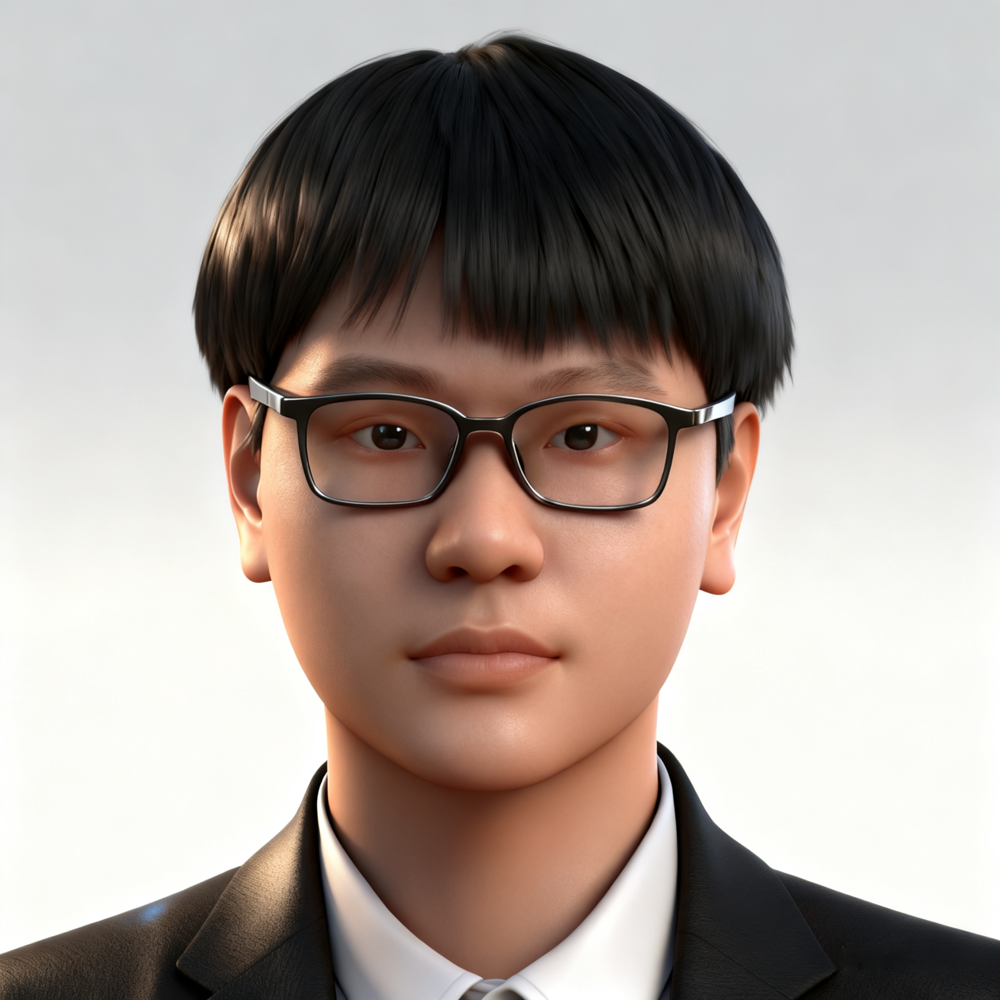

|
Keyi Kong 孔轲祎
Hi, I am a final-year undergraduate student at Taishan (Honors) College, Shandong University, working under the supervision of Associate Professor Zhaochun Ren. My research interests focus on Trustworthy Large Language Models (LLMs) and Generative Information Retrieval (GenIR). Additionally, I am passionate about competitive programming.
I am currently seeking PhD positions for 2026 fall! If my background resonates with your work, I would welcome the opportunity to connect.
Email /
CV /
Google Scholar /
Github
|

|
|
Scaling Instruction-Finetuning for Zero-Shot Generative Retrieval
Weiwei Sun*, Keyi Kong*, Xinyu Ma, Shuaiqiang Wang, Dawei Yin, Maarten de Rijke, Zhaochun Ren, Yiming Yang
Under Review
Paper
|
|
Perplexity-aware Correction for Robust Alignment with Noisy Preferences
Keyi Kong*, Xilie Xu*, Di Wang, Jingfeng Zhang, Mohan Kankanhalli
Accepted by NeurIPS 2024
Paper / Code
|
|
An LLM can Fool Itself: A Prompt-Based Adversarial Attack
Xilie Xu*, Keyi Kong*, Ning Liu, Lizhen Cui, Di Wang, Jingfeng Zhang, Mohan Kankanhalli
Accepted by ICLR 2024
Paper / Code
|
Experience
- 2024.11 - 2025.08 : Research Intern, Baidu Search, under Dr. Xinyu Ma
- 2024.07 - 2024.09 : Research Intern, National University of Singapore, under Prof. Mohan Kankanhalli
- 2023.09 - 2024.05 : Research Assistant, IR Lab, Shandong University, under Prof. Pengjie Ren
|
Selected Awards
- 2023 ICPC Asia Hefei Regional Contest - Gold Medal
- 2024 Shandong Provincial Programming Contest - Champion (1st Place)
- 2024 CCPC National Invitational Contest (Shandong) - Third Place
|
Academic Services
- Conference Reviewer: AAAI (2026), ACL (2025), AISTATS (2025-2026), EMNLP (2025), ICLR (2025-2026), ICML (2025), NeurIPS (2024-2025)
|
|